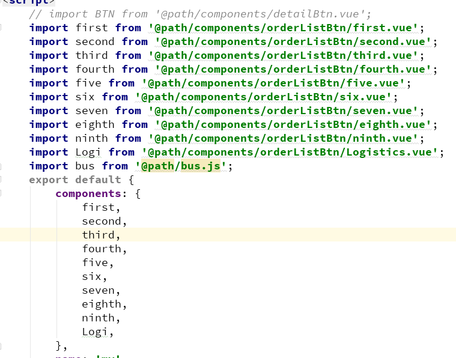
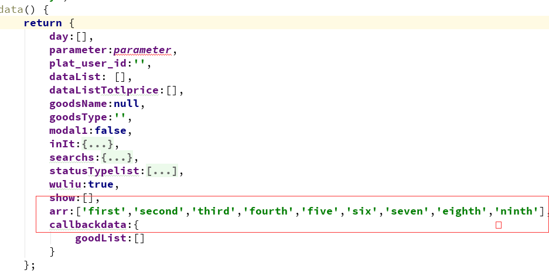
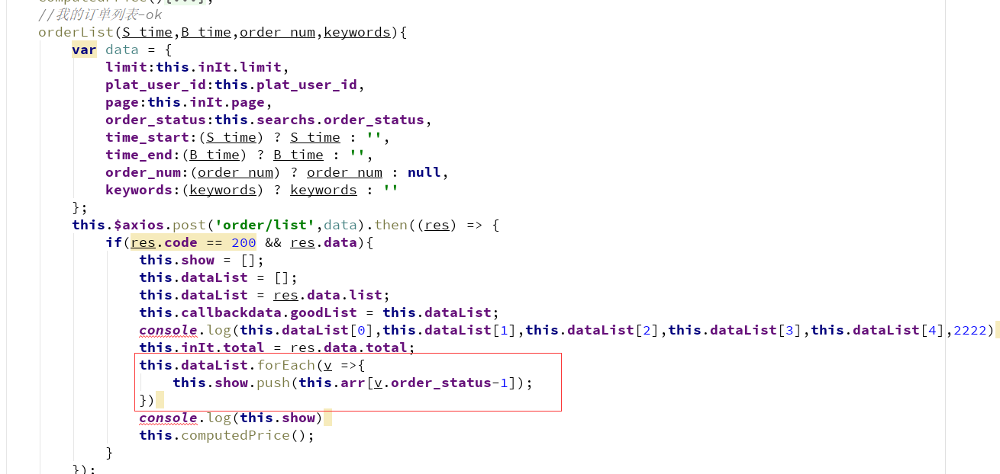
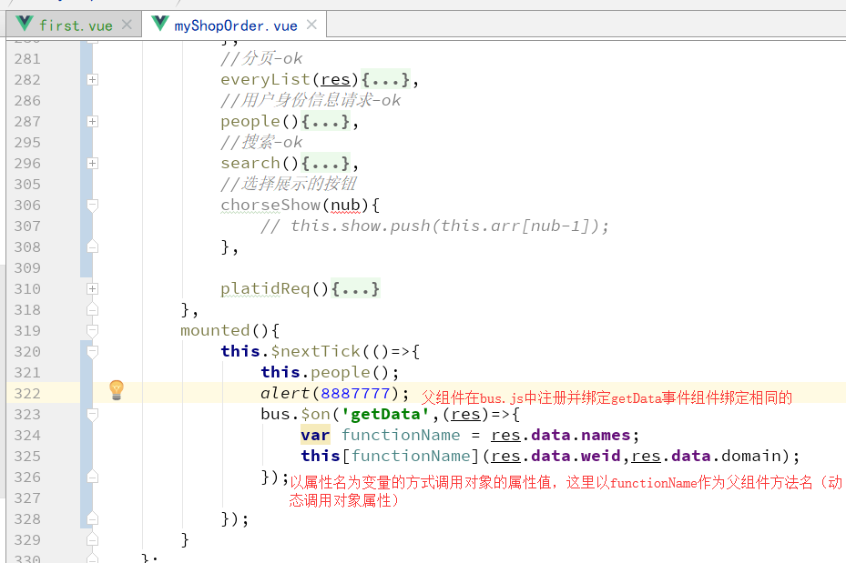
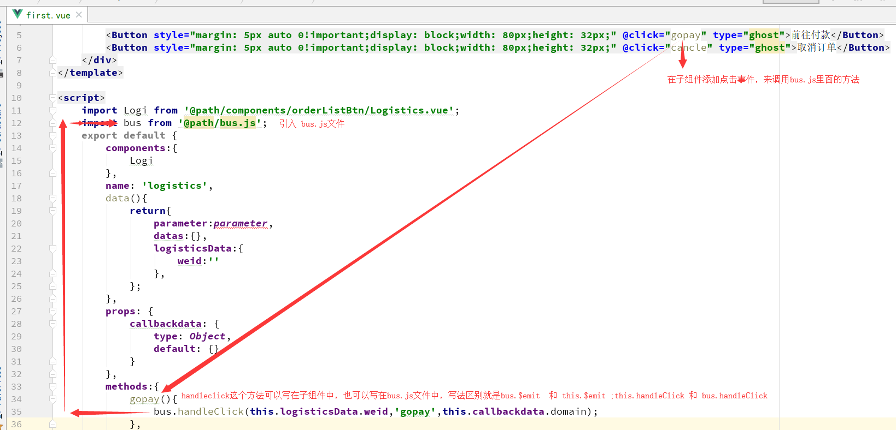
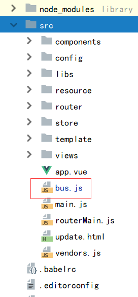
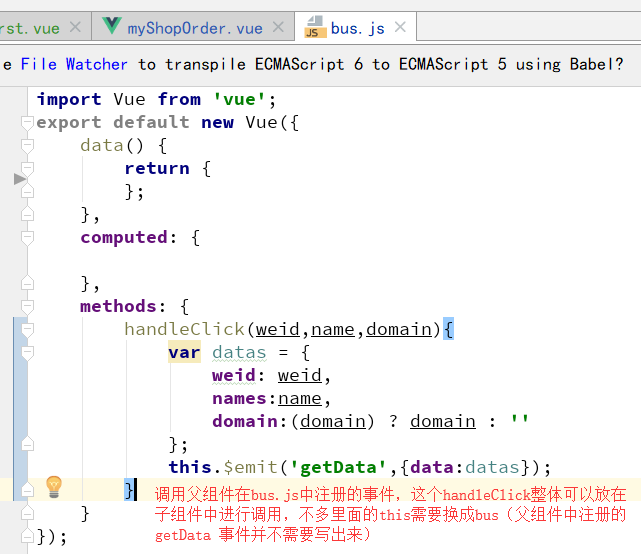

父组件中：
1.引入子组件并在components中声明子组件
2.在data中创建数组来控制显示组件
3.在每次获取列表时候都要重新生成show数组
4.在html中动态调用子组件
《component style="margin-left: 34px;" :callbackdata="dataList[index]" v-bind:is="show[index]">《/component>
这里的 :callbackdata="dataList[index]" 给调用的子组件传递数据
v-bind:is="show[index]" 根据index值选择show数组里面相应的组件名来显示
5.在bus.js中注册监听事件getData
注：要引入bus.js
子组件中：
注：要引入bus.js
bus.js中：
bus文件的位置
bus文件的写法
在父组件中给bus.js中注册监听事件，不需要在bus.js文件中写出来